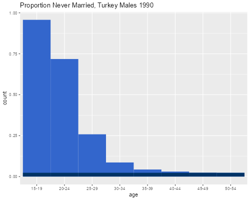
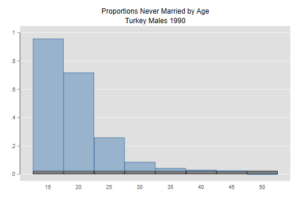
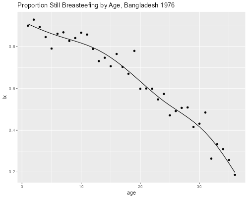
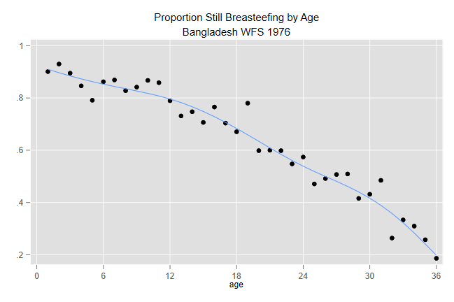

<h2 id="current-status-life-tables">Current Status Life Tables</h2>
<p>We will consider applications of current status life tables to
nuptiality and breastfeeding.</p>

{% include srtabs.html %}

<h3 id="proportions-married">Proportions Married</h3>
<p>This is the example on page 90 of the textbook, showing proportions
single by age for Turkish men in 1990. I start at age 15 rather than 0
because the proportion ever married is zero in the younger age
groups.</p>
<pre class='r'>> tk &lt;- read.table("https://grodri.github.io/datasets/turkey90.dat",
+     header = TRUE) # all columns have names
</pre>
<pre class='stata'>. clear

. import delimited using https://grodri.github.io/datasets/turkey90.dat, ///
>   delim(" ", collapse) clear
(encoding automatically selected: ISO-8859-1)
(3 vars, 8 obs)
</pre>
<p>Next I compute the proportion single in each age group, estimate the
proportion single at age 50 <code>(s50)</code> as the average of age
groups 45-49 and 50-54, and compute SMAM. I add 15 because that’s the
age at which I started, and multiply <code>s50</code> by 35 (which is 50
- 15).</p>
<pre class='stata'>. gen p = single/n

. scalar s50 = (p[7] + p[8])/2

. quietly sum p in 1/7         // exclude 50+

. scalar smam = 15 + (5 * r(sum) - 35 * s50)/(1 - s50)

. display smam
25.003883
</pre>
<pre class='r'>> library(dplyr)
> tk &lt;- mutate(tk, 
+   age = factor(age, labels=paste(seq(15,50,5),"-",seq(19,54,5),sep="")),
+   p = single/n)
> s &lt;- summarize(tk, p50 = sum(p[7:8])/2, 
+   smam =  15 + (5 * sum(p[1:7]) - 35 * p50)/(1 - p50))
> s
         p50     smam
1 0.02331215 25.00388
</pre>
<p>SMAM is 25 years and corresponds to the lighter area in the figure
below scaled by <code>1 - s50.</code> The darker area shows the
proportion that will remain single by age 50.</p>
<pre class='r'>> library(ggplot2)
> tk &lt;- mutate(tk, s = ifelse( p > s$p50, s$p50, p))
> ggplot(tk, aes(age, weight = p)) + geom_bar(width = 1, fill = "#3366cc") +
+   geom_bar(aes(weight = s), width = 1, fill = "#003366") +
+   ggtitle("Proportion Never Married, Turkey Males 1990")
> ggsave("smamtk90r.png", width = 500/72, height = 400/72, dpi = 72)
</pre>
<p></p>
<pre class='stata'>. gen p50 = s50

. gen pr = p - p50

. graph bar p50 pr, stack over(a, gap(0) ) legend(off) ///
>   bar(2, color(51 102 153)) ///
>   title(Proportions Never Married by Age) ///
>   subtitle(Turkey Males 1990) 

. graph export smamtk90.png, width(500) replace
file smamtk90.png saved as PNG format
</pre>
<p></p>
<p>SMAM is often interpreted as the mean age at marriage conditional on
marrying by age 50. This interpretation applies to real cohorts only if
we are willing to assume that nuptiality has been constant over the last
35 years. However, the measure is a useful synthetic summary of period
nuptiality, even without the assumption of stationarity. (In fact, the
unscaled version has a direct interpretation as time lived in the single
state by Turkish men in 1990.)</p>
<h3 id="duration-of-breastfeeding">Duration of Breastfeeding</h3>
<p>In an earlier handout on smoothing I showed that retrospective
reports of duration of breastfeeding in Bangladesh (as elsewhere), show
very substantial heaping at multiples of 12 (and to a lesser extent 6)
months. We now use a current status life table to obtain more reliable
estimates.</p>
<p>I extracted data from the Bangladesh WFS for all births in the three
years preceding the survey and tabulated the number still breastfeeding
and the total number of births by current age and type of place of
residence (urban, rural). We will collapse the data by age, effectively
summing over place of residence.</p>
<pre class='r'>> library(haven)
> bd &lt;- read_dta("https://grodri.github.io/datasets/bdbrfeed.dta")
> bd &lt;- group_by(bd, age) |> summarize(stillbr = sum(stillbr), n = sum(n))
</pre>
<pre class='stata'>. use https://grodri.github.io/datasets/bdbrfeed.dta, clear       
(BDSR03 extract)

. collapse (sum) stillbr (sum) n, by(age)
</pre>
<p>The current status estimate of the life table is simply the
proportion still breastfeeding at each age:</p>
<pre class='r'>> library(dplyr)
> library(ggplot2)
> bd &lt;- mutate(bd, lx = stillbr/n)
> ggplot(bd, aes(age, lx)) + geom_point()
</pre>
<pre class='stata'>. gen lx = stillbr/n

. scatter lx age
</pre>
<p>A slight problem with this “lx” function (shown below) is that it is
not monotone. There is an algorithm to force monotonicity known as “pool
adjacent violators”; essentially you use the observed proportions as
long as they are non increasing, when you find a violation of
monotonicity you backtrack, combining adjacent ages, until the problem
dissappears, at which you resume working forward.</p>
<p>A simpler approach is to use a smoother, and the figure below shows a
regression spline. I fitted it used logistic regression to take into
account the fact that the underlying data are binary, but otherwise the
basic idea is the same as before. I use a regression spline with
internal knots at 12 and 24 months.</p>
<pre class='r'>> library(splines)
> sf &lt;- glm( cbind(stillbr, n - stillbr) ~ bs(age, knots=c(12,24)), 
+   data = bd, family = binomial)
> bd &lt;- mutate(bd, fit = fitted(sf))  # default is proportion
> ggplot(bd, aes(age, lx)) + geom_point() + geom_line(aes(age, fit)) + 
+   ggtitle("Proportion Still Breasteefing by Age, Bangladesh 1976")
> ggsave("bdbrfeedr.png", width = 500/72, height = 400/72, dpi = 72)
</pre>
<p></p>
<pre class='stata'>. bspline ,xvar(age) knots(0 12 24 36) p(3) gen(bs)

. quietly blogit still n bs*, noconstant

. predict fit, pr

. twoway scatter lx age || line fit age, legend(off) ///
>   xlabels(0 6 12 18 24 30 36) ///
>   title(Proportion Still Breasteefing by Age) ///
>   subtitle(Bangladesh WFS 1976)

. graph export bdbrfeed.png, replace
file bdbrfeed.png saved as PNG format
</pre>
<p></p>
<p>An important point to note is that there is no evidence of
precipitous declines in proportions still breastfeeding after 12 or 24
months, so the heaping of retrospective reports on these values was
probably bad data rather than a real phenomenon. This is why current
status life tables are the method of choice for duration data on
breastfeeding, post-partum amenorrhea, and post-partum abstinence, which
are usually poorly reported.</p>
<p>It is clear that upwards of 90% of all children are breastfed; the
exact value is hard to determine because our first data point is at
exact age one month, but a direct question suggests it is probably of
the order of 95%.</p>
<p>Note also that almost 20% of the kids are still breastfeeding at age
3 exact years. The time spent breastfeeding in the first three years,
computed as the area under the “lx” curve, is</p>
<pre class='r'>> summarize(bd, Lx = sum(lx), Fit = sum(fit))
# A tibble: 1 × 2
     Lx   Fit
  &lt;dbl> &lt;dbl>
1  23.0  22.8
</pre>
<pre class='stata'>. quietly sum lx

. di r(sum)
22.963591

. quietly sum fit

. di r(sum)
22.817572
</pre>
<p>or almost 23 months. Using the spline gives 22.8 months. The mean is
probably higher, depending on how far the 20% upper tail extends.</p>
<p>The incidence-prevalence method estimates duration in a state (such
as an illness) as a ratio of prevalence to incidence, or existing to new
cases. To obtain this estimate we compute the overall proportion still
breasteefing at durations 1-36 and divide by 0.95/36, an estimate of
cases who start breastfeeding each month:</p>
<pre class='r'>> summarize(bd, ipe = weighted.mean(lx, n)/(0.95/36))
# A tibble: 1 × 1
    ipe
  &lt;dbl>
1  23.8
</pre>
<pre class='stata'>. summ lx [fw=n]

    Variable │        Obs        Mean    Std. dev.       Min        Max
─────────────┼─────────────────────────────────────────────────────────
          lx │      3,850    .6275325    .2118189   .1864407   .9298246

. di r(mean)/(0.95/36)
23.780178
</pre>
<p>The incidence-prevalence estimate is 23.8 months, and is consistent
with the other results.</p>
<p>Note in closing that with current status data all observations are
censored,</p>
<ul>
<li><p>Children still breastfeeding are right censored at their current
age (all we know is that they will breastfeed longer than that),
and</p></li>
<li><p>Children weaned, or who never breastfed, are left censored at
their current age (all we know is that they breastfed less than
that).</p></li>
</ul>
<p>Yet we can still estimate a survival distribution!</p>
